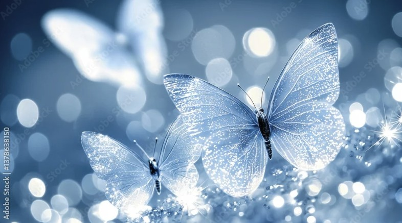
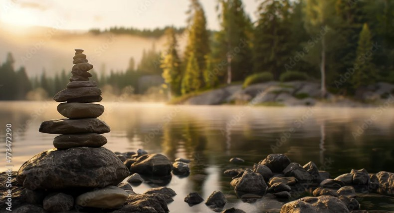
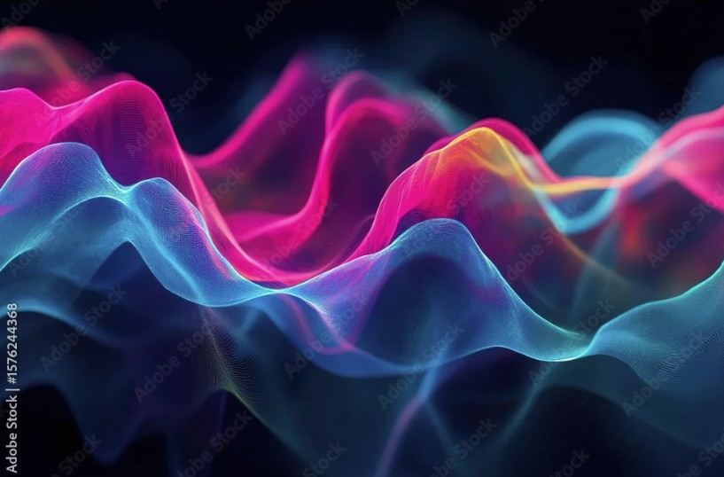
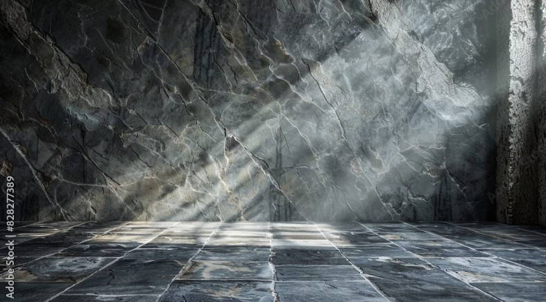

Color Theme Showcase
| Theme Name | Color Palette | Photoshop Image | Description |
|---|---|---|---|
| Serene Blue |  | Cool tones for medical or tech-focused layouts. Evokes calm and trust. | |
| Sunset Glow | Warm, emotional palette ideal for childcare or wellness branding. | ||
| Forest Calm |  | Earthy greens for nature-inspired or therapeutic themes. | |
| Vibrant Pulse |  | High-energy palette for youth, innovation, or fashion-forward projects. | |
| Minimal Slate |  | Neutral tones for professional, minimalist, or editorial layouts. |